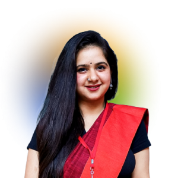
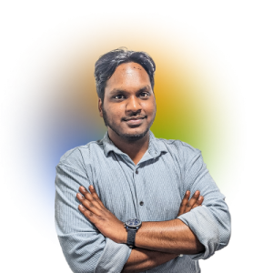

Meet our Fellows
2024
Shriya
BA Political Science (Hons.), Fergusson College
Azeem
Masters in Computer Applications, PES University, Bengaluru
Garima
Research Masters, King’s College London

Samiksha
BA (Hons.) Multimedia and Mass Communication, University of Delhi

Rohit
B.A. (Political Science, English, and History) Hons, Christ University

Rochana
BA.LLB (Hons), Symbiosis Law School, Pune

Rutwik
MA Development - Azim Premji University

Akshay
Integrated M.Sc. in Physics from Indian Institute of Technology, Roorkee

Chaitanya
B.A. (Hons.) in Political Science with a minor in Environmental Studies, Ashoka University

Aarushi
MA in Politics with specialisation in International Studies, Jawaharlal Nehru University
Hargun
BA (Hons) in Political Science with a minor in International Relations, Ashoka University
Siddharth
LLB, Government Law College, Mumbai University
Soumya
MA in Development, Azim Premji University, Bengaluru
Ekshika
MA in Politics with specialisation in International Studies, Jawaharlal Nehru University